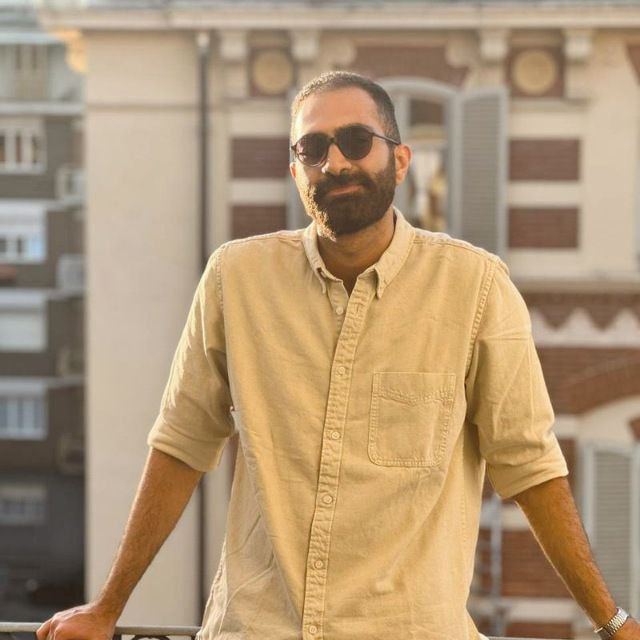

PF Resume

Summary
Motivated and detail-oriented web developer with a passion for building responsive and user-friendly websites. Strong foundation in HTML, CSS, and JavaScript, with hands-on experience in project-based learning.
Education
-
Bachelor of Science in Computer Science
University of Turin, Italy
2021 – 2024
-
High School Diploma
Turin International School, Italy
2017 – 2021
Work Experience
-
Junior Web Developer – Freelance
Jan 2024 – Present
- Developed and maintained personal and client websites using HTML, CSS, and JavaScript.
- Collaborated with clients to gather requirements and deliver tailored web solutions.
- Implemented responsive design for optimal viewing on various devices.
-
Intern, IT Support – Tech Solutions Turin
Jun 2023 – Sep 2023
- Assisted in troubleshooting hardware and software issues for staff and students.
- Supported the migration of legacy systems to modern web-based platforms.
Skills
- HTML5, CSS3, JavaScript ⭐️⭐️⭐️⭐️
- Responsive Web Design ⭐️⭐️⭐️⭐️
- Version Control (Git & GitHub) ⭐️⭐️⭐️
- Problem Solving ⭐️⭐️⭐️⭐️
- Team Collaboration ⭐️⭐️⭐️⭐️
Awards & Certifications
- Certified Web Developer – freeCodeCamp (2024)
- Winner, Turin Coding Challenge (2023)
- English Proficiency Certificate (C1)